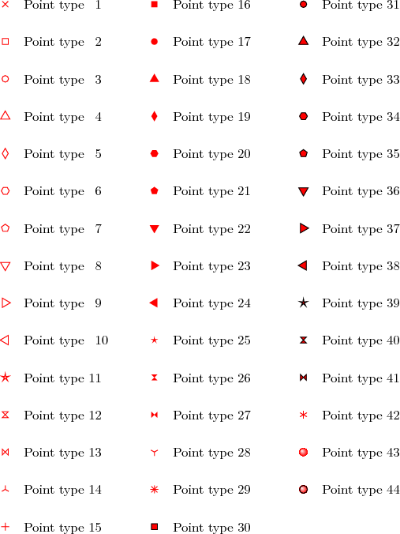
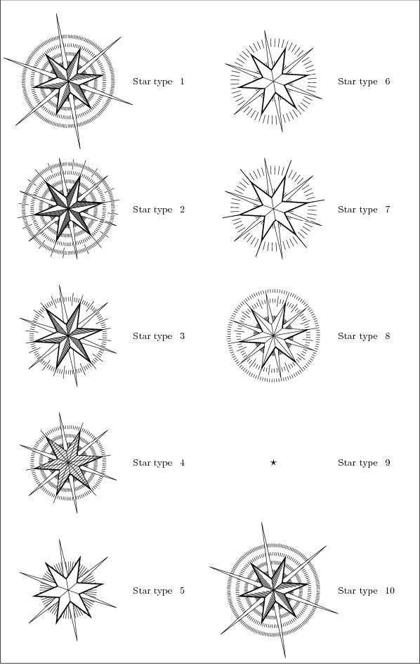

7 Line and Point Types
The tables in this chapter show the appearances of each of the numbered line, point and star types available in the lines, points and stars plot styles respectively.
Table 7.1: The numbered line types available in the lines plot style.

Table 7.2: The numbered point types available in the points plot style.
 Table 7.3: The numbered star types available in the stars plot style.